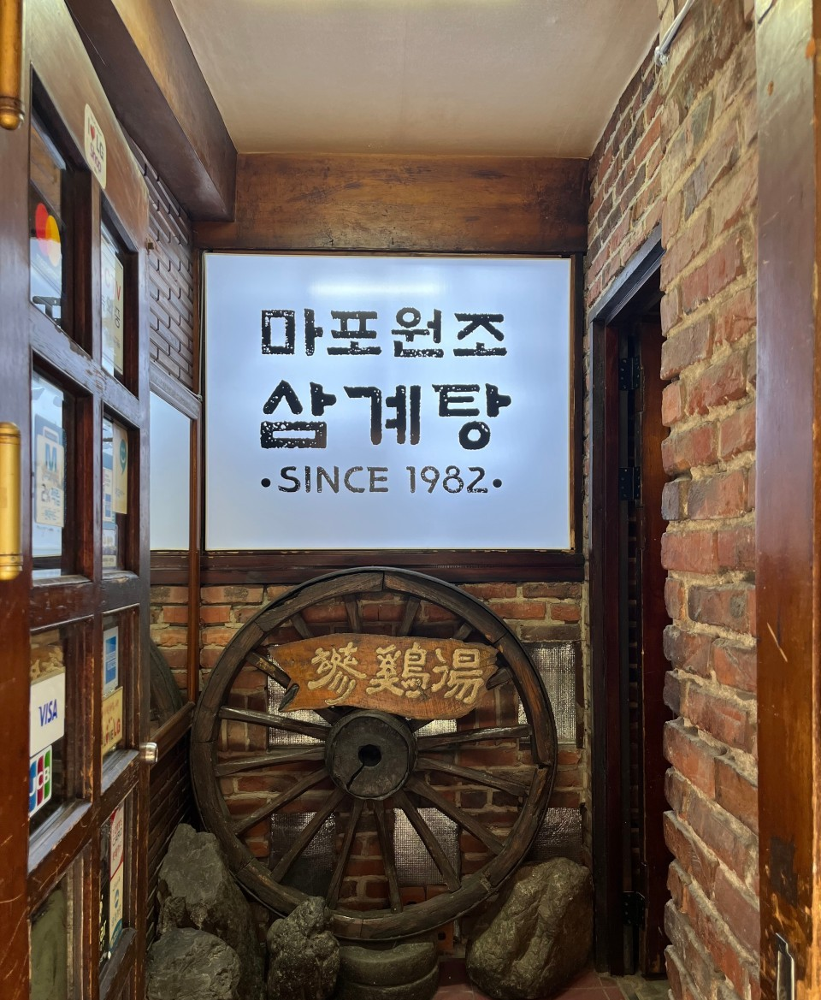
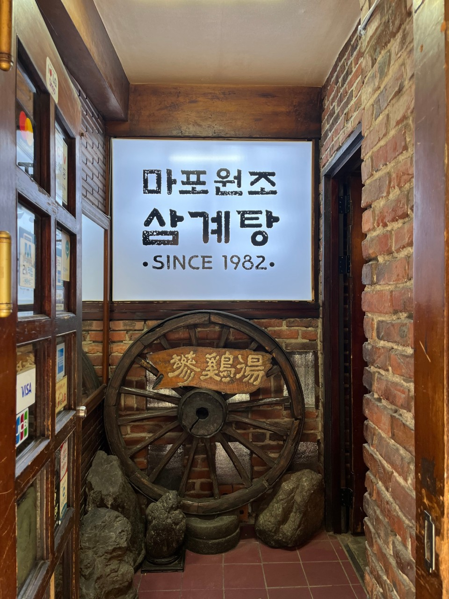
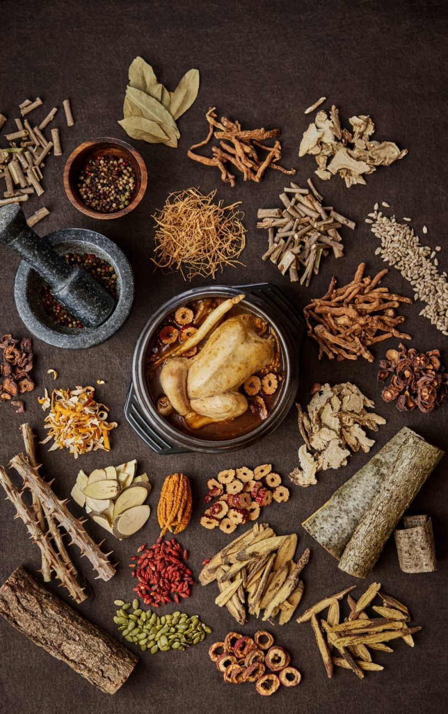

03 · A BOWL OF COMFORT
用心熬制的一碗汤，让身心都得到温暖
以用心熬制的一碗汤，为您带来身心放松的温暖时光。也推荐品尝已完全去除漆树致敏成分的漆树鸡汤，以及在乌鸡浓郁肉香中融入漆树醇厚风味的漆树乌鸡汤。

以10种韩方药材熬制的醇厚浓汤——麻浦元祖参鸡汤。

麻浦元祖参鸡汤自1982年起便坚守在同一个地方。沿袭多年的传统做法，每天清晨将整鸡慢火熬煮，为您准备一碗清淡又饱足的滋补汤。

在沿袭多年的传统做法中加入10种韩方药材，熬出深邃浓郁的汤底。招牌漆树人参鸡汤与药膳人参鸡汤承载着韩国传统的滋补饮食文化，深受本地顾客与海外游客的喜爱。
以用心熬制的一碗汤，为您带来身心放松的温暖时光。也推荐品尝已完全去除漆树致敏成分的漆树鸡汤，以及在乌鸡浓郁肉香中融入漆树醇厚风味的漆树乌鸡汤。
欢迎查看来自世界各地顾客的真实评价。

몸보신하려고 방문했는데 정말 만족했습니다. 😊 삼계탕 종류가 다양해서 취향에 맞게 선택할 수 있었고, 국물이 진하고 깊은 맛이라 마지막 한 숟갈까지 맛있게 먹었어요. 닭도 정말 부드러워서 살이 쉽게 발라지고, 찹쌀도 푹 익어 든든했습니다. 함께 나온 전도 바삭하고 고소해서 삼계탕과 잘 어울렸어요. 직원분들도 친절하시고 매장도 깔끔해서 기분 좋게 식사했습니다. 다음에도 몸보신이 필요할 때 다시 방문하고 싶어요!

The restaurant is definitely a hidden find along a small alley. But when i get in with my friend, i am so amazed with interior. It has thus nostalgic feel to it, with soft music making the atmosphere very relaxing. Samgetang is very nourishing for the body and the menu explains each dish’s benefits clearly. Simple menu so it is easy to choose. I went with the original samgetang. Broth is thick and rich to boost collagen. 😊 chicken is tender and rich with hinseng aroma. Good place to savour korean authentic dish when you visit seoul.

老舗の参鶏湯屋さんです。入口からは中が見えず入りずらいですが、中は広々としていています。歴史がありそうな雰囲気ですが清潔感もあります。土曜の13時過ぎに伺いましたが、半分くらいは空いていて1人でも気軽に入れました。普通の参鶏湯を頼みましたが、トロトロのスープでとても美味しかったです。海鮮チヂミもカリカリで絶品でした。流石に1人だと2品は多くて食べきれませんでしたが、持ち帰りにも対応してくれました。店員さんは英語が通じるし優しいです。またリピートしたいと思います。

在首爾的45年老店蔘雞湯 店裡全是本地韓國人 木桌木椅 牆上貼著老菜單 一看就是開了很久的老店😍 上桌附一杯人參酒 趁熱倒進去 香氣直接炸開🤤 藥膳雞 藥香濃鬱 烏骨雞 雞肉更緊實 湯色深濃 入口不黏膩 淡淡藥香 南瓜籽枸杞飄浮其中 糯米吸飽整鍋精華 嫩到筷子一撥就散 有中文菜單 一人也能吃 有去首爾玩的一定要試試，我敢說不用做功課 直接去！！！！
麻浦に宿泊して、参鶏湯（サムゲタン）を食べたいと思って訪問しました。店はとても雰囲気があります。妻と２人で来たので、普通の参鶏湯と漆烏骨鶏湯を注文。参鶏湯は優しい味で鶏の身もおいしくいただけました。漆烏骨鶏湯は色が濃くまさに薬膳という味でスープがおいしく気に入りました。もし次来るなら他のメニューも試してみたいと思います。ジャガイモのチヂミ（カムジャジョン）ももちもちパリパリしていておいしかったです。
Nice and quiet place, staff is very nice and helpful, first time try this, warm, nourishing Korean ginseng chicken soup. Tender chicken, fragrant herbal broth and tasty stuffed glutinous rice. Truly satisfying comfort food!
음식이 정말 맛있고 간도 딱 맞아서 너무 만족스러웠어요. 주문한 음식도 금방 나와서 기다리지 않아 좋았습니다. 가게 분위기도 아늑하고 편안해서 식사하는 내내 기분이 좋았어요. 직원분들도 정말 친절하시고 서비스도 좋았습니다. 특히 여러 언어로 응대가 가능해서 외국인들도 부담 없이 방문하기 좋은 곳인 것 같습니다. 다음에도 꼭 다시 방문하고 싶습니다!😄

参鸡汤很好吃，就在酒店后面，很方便，海鲜饼味道也很好，想吃清淡的非常推荐，店里古色古香，环境舒适
The restaurant is absolutely beautiful! Every detail of the interior is carefully designed, with historical objects that each have their own story, making the experience even more special. The food was truly wonderful, delicious, and prepared with great care. You can really feel the history and dedication behind every dish. The atmosphere is clean, organized, and very pleasant, making the whole experience even more enjoyable. If you are visiting the area, I highly recommend coming to Mapo Restaurant. It is a place where you can enjoy not only an amazing meal, but also a beautiful cultural experience. Thank you so much for the wonderful experience! 🤍
몸보신하려고 방문했는데 정말 만족했습니다. 😊 삼계탕 종류가 다양해서 취향에 맞게 선택할 수 있었고, 국물이 진하고 깊은 맛이라 마지막 한 숟갈까지 맛있게 먹었어요. 닭도 정말 부드러워서 살이 쉽게 발라지고, 찹쌀도 푹 익어 든든했습니다. 함께 나온 전도 바삭하고 고소해서 삼계탕과 잘 어울렸어요. 직원분들도 친절하시고 매장도 깔끔해서 기분 좋게 식사했습니다. 다음에도 몸보신이 필요할 때 다시 방문하고 싶어요!
The restaurant is definitely a hidden find along a small alley. But when i get in with my friend, i am so amazed with interior. It has thus nostalgic feel to it, with soft music making the atmosphere very relaxing. Samgetang is very nourishing for the body and the menu explains each dish’s benefits clearly. Simple menu so it is easy to choose. I went with the original samgetang. Broth is thick and rich to boost collagen. 😊 chicken is tender and rich with hinseng aroma. Good place to savour korean authentic dish when you visit seoul.
老舗の参鶏湯屋さんです。入口からは中が見えず入りずらいですが、中は広々としていています。歴史がありそうな雰囲気ですが清潔感もあります。土曜の13時過ぎに伺いましたが、半分くらいは空いていて1人でも気軽に入れました。普通の参鶏湯を頼みましたが、トロトロのスープでとても美味しかったです。海鮮チヂミもカリカリで絶品でした。流石に1人だと2品は多くて食べきれませんでしたが、持ち帰りにも対応してくれました。店員さんは英語が通じるし優しいです。またリピートしたいと思います。
在首爾的45年老店蔘雞湯 店裡全是本地韓國人 木桌木椅 牆上貼著老菜單 一看就是開了很久的老店😍 上桌附一杯人參酒 趁熱倒進去 香氣直接炸開🤤 藥膳雞 藥香濃鬱 烏骨雞 雞肉更緊實 湯色深濃 入口不黏膩 淡淡藥香 南瓜籽枸杞飄浮其中 糯米吸飽整鍋精華 嫩到筷子一撥就散 有中文菜單 一人也能吃 有去首爾玩的一定要試試，我敢說不用做功課 直接去！！！！
麻浦に宿泊して、参鶏湯（サムゲタン）を食べたいと思って訪問しました。店はとても雰囲気があります。妻と２人で来たので、普通の参鶏湯と漆烏骨鶏湯を注文。参鶏湯は優しい味で鶏の身もおいしくいただけました。漆烏骨鶏湯は色が濃くまさに薬膳という味でスープがおいしく気に入りました。もし次来るなら他のメニューも試してみたいと思います。ジャガイモのチヂミ（カムジャジョン）ももちもちパリパリしていておいしかったです。
Nice and quiet place, staff is very nice and helpful, first time try this, warm, nourishing Korean ginseng chicken soup. Tender chicken, fragrant herbal broth and tasty stuffed glutinous rice. Truly satisfying comfort food!
음식이 정말 맛있고 간도 딱 맞아서 너무 만족스러웠어요. 주문한 음식도 금방 나와서 기다리지 않아 좋았습니다. 가게 분위기도 아늑하고 편안해서 식사하는 내내 기분이 좋았어요. 직원분들도 정말 친절하시고 서비스도 좋았습니다. 특히 여러 언어로 응대가 가능해서 외국인들도 부담 없이 방문하기 좋은 곳인 것 같습니다. 다음에도 꼭 다시 방문하고 싶습니다!😄
参鸡汤很好吃，就在酒店后面，很方便，海鲜饼味道也很好，想吃清淡的非常推荐，店里古色古香，环境舒适
The restaurant is absolutely beautiful! Every detail of the interior is carefully designed, with historical objects that each have their own story, making the experience even more special. The food was truly wonderful, delicious, and prepared with great care. You can really feel the history and dedication behind every dish. The atmosphere is clean, organized, and very pleasant, making the whole experience even more enjoyable. If you are visiting the area, I highly recommend coming to Mapo Restaurant. It is a place where you can enjoy not only an amazing meal, but also a beautiful cultural experience. Thank you so much for the wonderful experience! 🤍